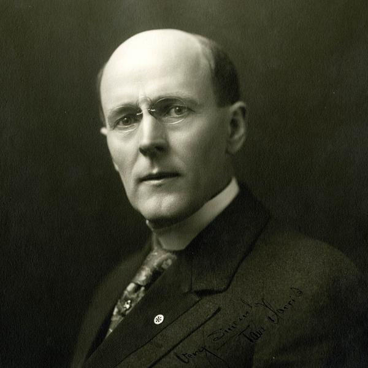
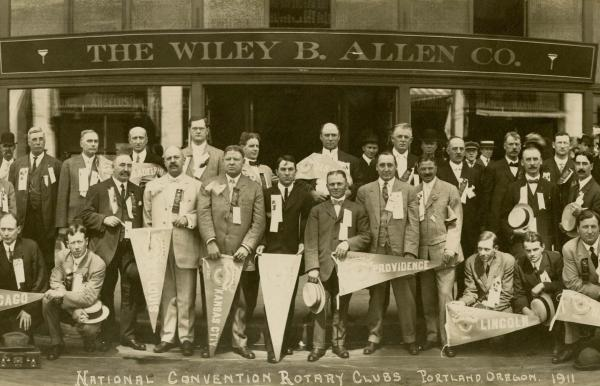
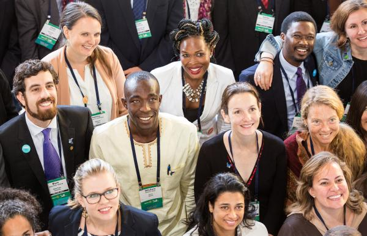
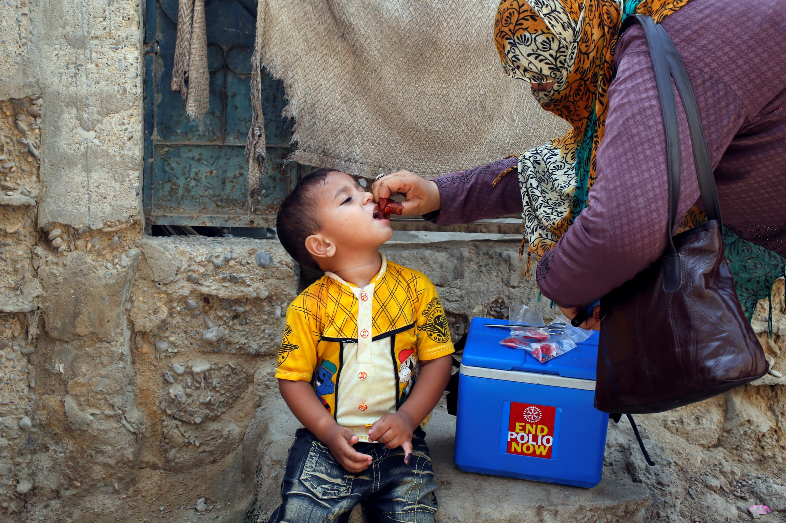

Основни вехи в историята на Ротари
От един клуб в Чикаго до глобално движение, обхващащо всеки континент, пътуването на Ротари представлява над столетие служба и отдаденост.
Основаването
Основан първият клуб на Ротари

Адвокатът Пол Пърси Харис основа първия клуб на Ротари в Чикаго, Илинойс, с трима приятели. Клубът ротираше срещите си между офисите на членовете, което вдъхнови името "Ротари".

Основателите се стремяха да пресъздадат приятелския дух на малките градове в голяма градска среда, фокусирайки се върху приятелството и обществената услуга.
Международно разширяване
Основан първият международен клуб
Клубът на Ротари в Уинипег, Манитоба, Канада, става първият клуб извън САЩ, а това отбелязва разширяването на Ротари отвъд американските граници. Това постижение доведе до промяна на името на организацията на Ротари Интернешънъл през г.
Растеж след войната
Конференция по Хартата на ООН
49 членове на Ротари участваха като делегати, съветници или консултанти на конференцията по Хартата на ООН в Сан Франциско. Участието на Ротари демонстрира нейния ангажимент към международното разбирателство и мир.

Това участие утвърди ролята на Ротари като ключов играч в насърчаването на глобалното сътрудничество и хуманитарните усилия.
Кампанията срещу полиомиелита
Първи проект за имунизация срещу полиомиелит
Ротари стартира първия си проект за имунизация срещу полиомиелит във Филипините, ваксинирайки 6.3 милиона деца. Този проект положи основата за това, което ще се превърне в най-голямото хуманитарно постижение на Ротари.
Стартирана Глобалната инициатива за изкореняване на полиомиелита

Ротари, СЗО, ЮНИСЕФ и CDC стартираха Глобалната инициатива за изкореняване на полиомиелита. От тогава случаите на полиомиелит са намалели с 99.9%.
Ротари е допринесла с повече от 2.7 милиарда долара и безброй доброволчески часове, за да защити почти 3 милиарда деца в 122 страни от тази парализираща болест.
Доклад на Ротари Интернешънъл за ПолиоПлюс,
Съвременна епоха
Жените се присъединяват към ръководството
Докато жените са членове от г., Ан Л. Матюс става първата жена председател на важен комитет на Ротари (Публичен имидж), което отбелязва увеличеното представителство на жените в ръководството.
Продължаващ растеж и иновации
Ротари надхвърля 1.4 милиона членове в повече от 46 000 клуба по целия свят, с разширен фокус върху седем области на въздействие, включително екологичната устойчивост, неотдавна добавена, за да се справи с климатичните предизвикателства.